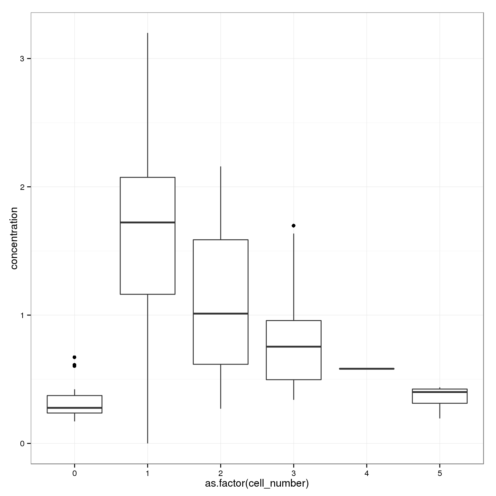
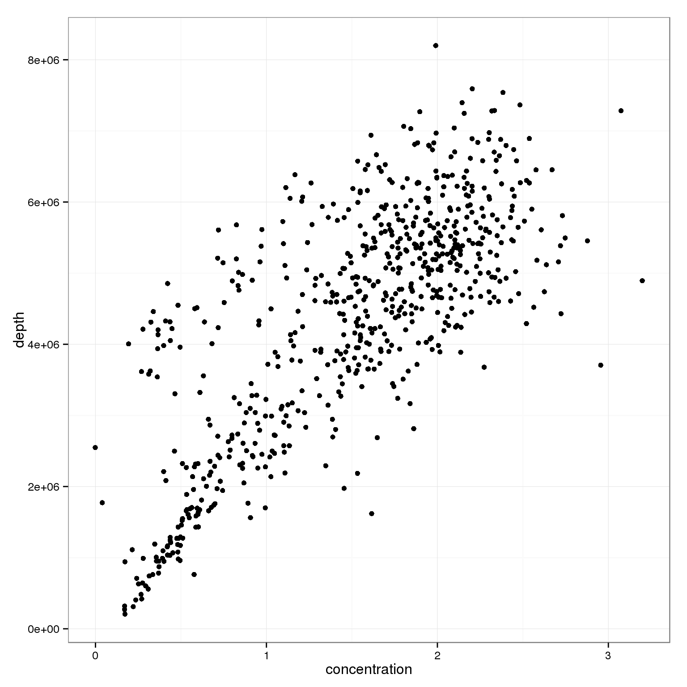
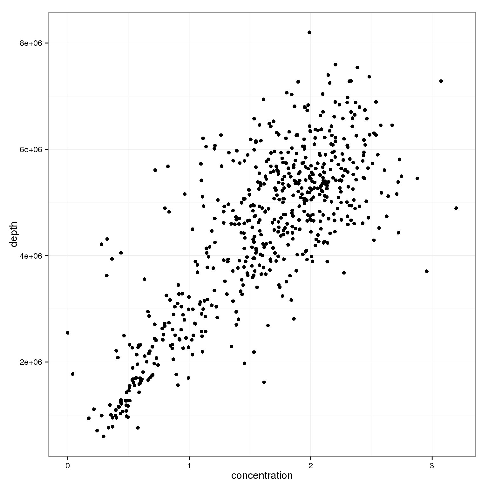
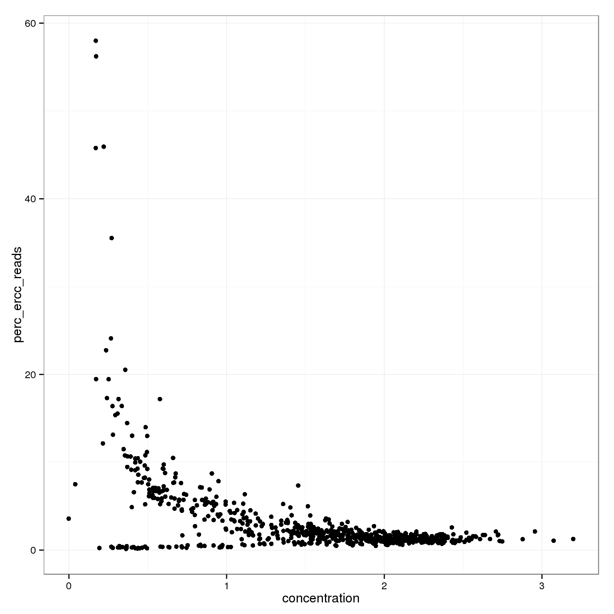
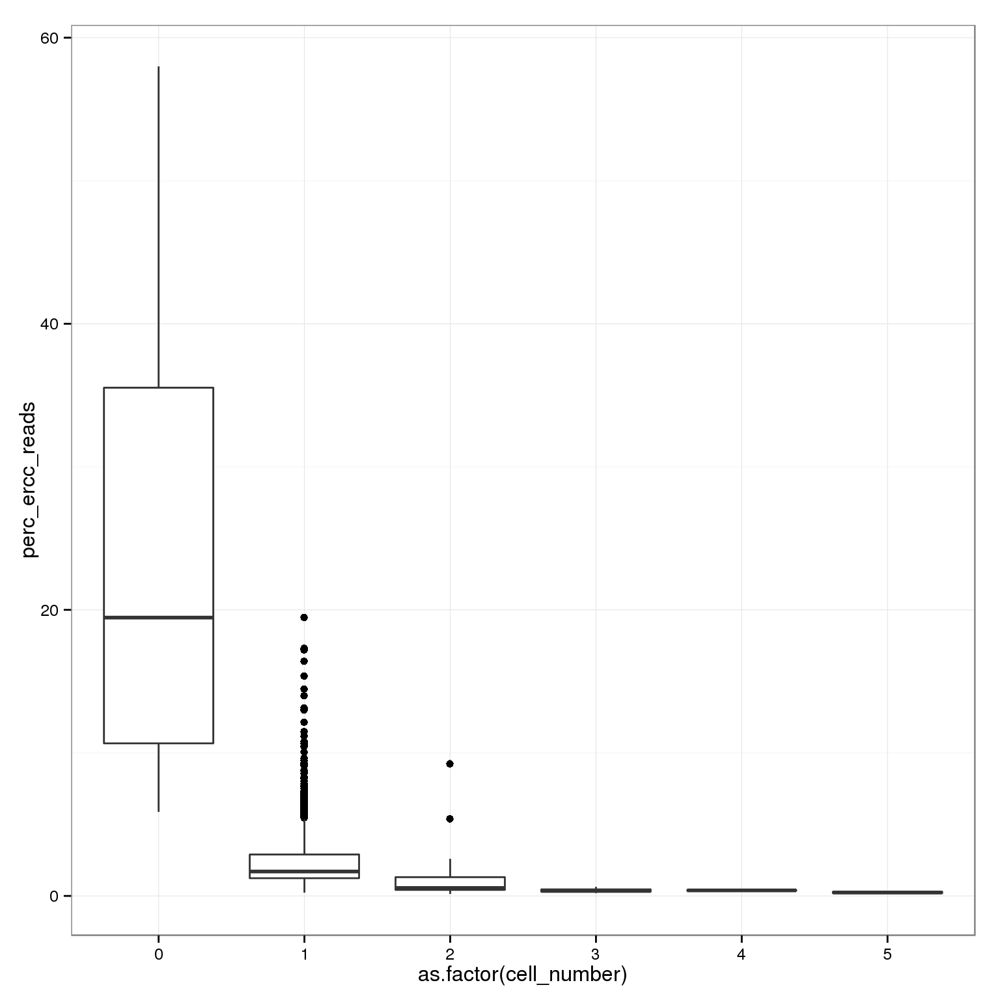
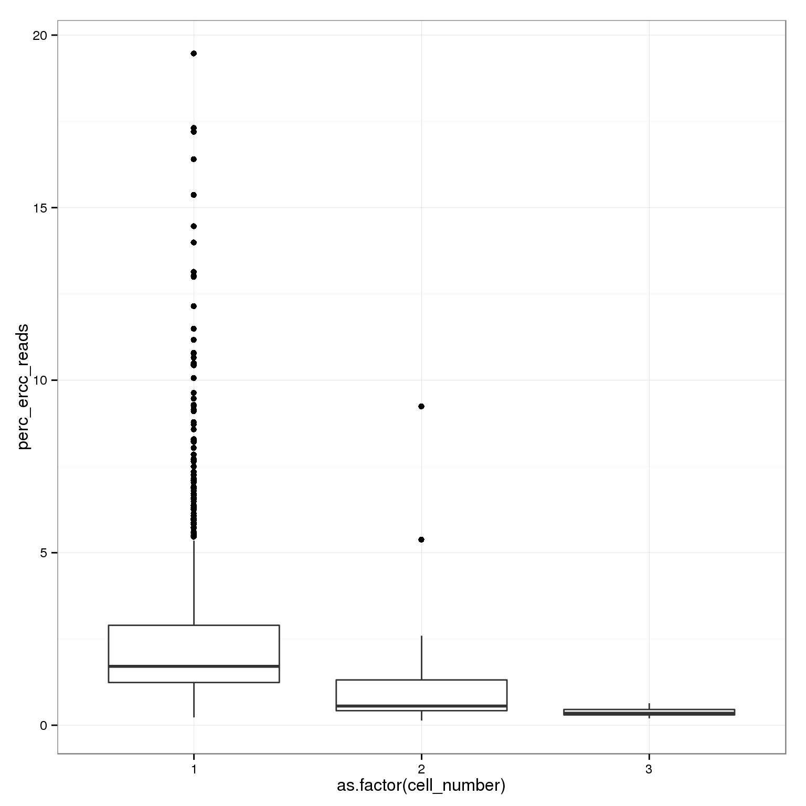
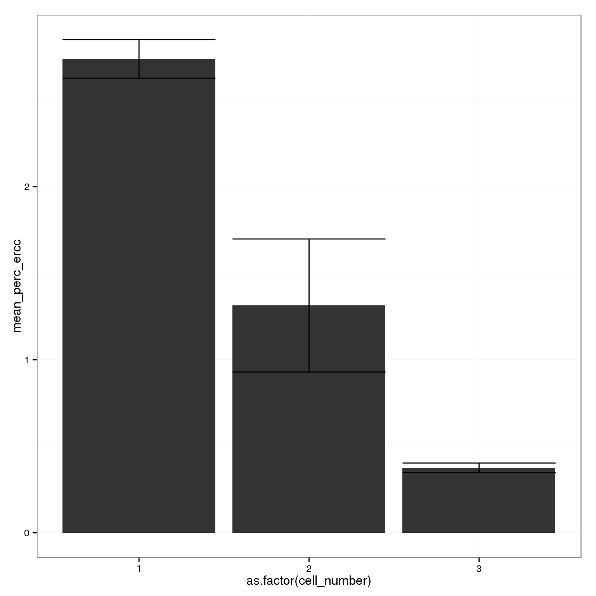

Last updated: 2015-10-11
Code version: 172e9a3d594b1c72037445ad9dae00c7d3c81297
library("dplyr")
library("edgeR")
library("ggplot2")
library("cowplot")
theme_set(theme_bw(base_size = 12))
source("functions.R")Start with the annotation file. It contains the bulk samples as well, so remove them.
anno <- read.table("../data/annotation.txt", header = TRUE,
stringsAsFactors = FALSE)
anno_single <- anno %>% filter(well != "bulk")
head(anno_single) individual replicate well batch sample_id
1 NA19098 r1 A01 NA19098.r1 NA19098.r1.A01
2 NA19098 r1 A02 NA19098.r1 NA19098.r1.A02
3 NA19098 r1 A03 NA19098.r1 NA19098.r1.A03
4 NA19098 r1 A04 NA19098.r1 NA19098.r1.A04
5 NA19098 r1 A05 NA19098.r1 NA19098.r1.A05
6 NA19098 r1 A06 NA19098.r1 NA19098.r1.A06Import the read counts per gene. Per cell calculate the total number of reads that map to endogenous protein-coding genes, the total number of reads that map to ERCC spike-ins, and the total number of reads that map to both.
reads <- read.table("../data/reads.txt", header = TRUE,
stringsAsFactors = FALSE)
stopifnot(colnames(reads) == anno_single$sample_id)
ercc_index <- grepl("ERCC", rownames(reads))
anno_single$total_reads_gene = colSums(reads[!ercc_index, ])
anno_single$total_reads_ercc = colSums(reads[ercc_index, ])
anno_single$total_reads = colSums(reads)Import the molecule counts per gene. Per cell calculate the total number of molecules that map to endogenous protein-coding genes, the total number of molecules that map to ERCC spike-ins, and the total number of molecules that map to both.
molecules <- read.table("../data/molecules.txt", header = TRUE,
stringsAsFactors = FALSE)
stopifnot(colnames(molecules) == anno_single$sample_id,
rownames(molecules) == rownames(reads))
anno_single$total_molecules_gene = colSums(molecules[!ercc_index, ])
anno_single$total_molecules_ercc = colSums(molecules[ercc_index, ])
anno_single$total_molecules = colSums(molecules)Import the summary counts from featureCounts. These were gather from the featureCounts summary files with gather-summary-counts.py. The data come from the sickle-trimmed sequences combined across all lanes for each single cell.
summary_counts <- read.table("../data/summary-counts.txt", header = TRUE,
stringsAsFactors = FALSE)Clean up the data.
summary_per_sample <- summary_counts %>%
filter(sickle == "quality-trimmed", well != "bulk") %>%
select(-sickle) %>%
arrange(rmdup, individual, batch, well) %>%
as.data.frame
stopifnot(paste0("NA", summary_per_sample$individual) == anno_single$individual,
paste0("r", summary_per_sample$batch) == anno_single$replicate,
summary_per_sample$well == anno_single$well,
summary_per_sample$Assigned == c(anno_single$total_molecules,
anno_single$total_reads))Calculate the total number of mapped reads, unmapped reads, and sequencing depth (mapped + unmapped reads).
colnames(summary_per_sample) [1] "individual" "batch"
[3] "well" "rmdup"
[5] "Assigned" "Unassigned_Ambiguity"
[7] "Unassigned_MultiMapping" "Unassigned_NoFeatures"
[9] "Unassigned_Unmapped" "Unassigned_MappingQuality"
[11] "Unassigned_FragementLength" "Unassigned_Chimera"
[13] "Unassigned_Secondary" summary_per_sample <- summary_per_sample %>%
mutate(total_mapped = Assigned + Unassigned_Ambiguity + Unassigned_NoFeatures,
total_unmapped = Unassigned_Unmapped,
depth = total_mapped + total_unmapped)
anno_single$total_mapped <- summary_per_sample[summary_per_sample$rmdup == "reads",
"total_mapped"]
anno_single$total_unmapped <- summary_per_sample[summary_per_sample$rmdup == "reads",
"total_unmapped"]
anno_single$depth <- summary_per_sample[summary_per_sample$rmdup == "reads",
"depth"]Input single cell observational quality control data.
qc <- read.table("../data/qc-ipsc.txt", header = TRUE,
stringsAsFactors = FALSE)
qc <- qc %>% arrange(individual, batch, well)
stopifnot(paste0("NA", qc$individual) == anno_single$individual,
paste0("r", qc$batch) == anno_single$replicate,
qc$well == anno_single$well)
head(qc) individual batch well cell_number concentration tra1.60
1 19098 1 A01 1 1.734785 1
2 19098 1 A02 1 1.723038 1
3 19098 1 A03 1 1.512786 1
4 19098 1 A04 1 1.347492 1
5 19098 1 A05 1 2.313047 1
6 19098 1 A06 1 2.056803 1Incorporate informatin on cell number, concentration, and TRA1-60 status.
anno_single$cell_number <- qc$cell_number
anno_single$concentration <- qc$concentration
anno_single$tra1.60 <- qc$tra1.60Calculate percentage of ERCC reads (out of all reads assigned to a feature), ERCC molecules, and unmapped reads.
anno_single <- anno_single %>%
mutate(perc_ercc_reads = total_reads_ercc / total_reads * 100,
perc_ercc_molecules = total_molecules_ercc / total_molecules * 100,
perc_unmapped = total_unmapped / depth * 100)
anno_single$num_genes = apply(reads[!ercc_index, ], 2, function(x) sum(x > 0))As we try to understand the general relationships between sequencing results and cellular mRNA content, we remove outlier batches. The quantification of the concentration of the single cells in replicate 1 of NA19098 failed. The number of ERCC molecules in replicate 2 of NA19098 are abnormally high.
anno_single <- anno_single %>% filter(batch != "NA19098.r1",
batch != "NA19098.r2")ggplot(anno_single,
aes(x = as.factor(cell_number), y = concentration)) +
geom_boxplot()
ggplot(anno_single,
aes(x = concentration, y = depth)) +
geom_point()
ggplot(anno_single[anno_single$cell_number == 1, ],
aes(x = concentration, y = depth)) +
geom_point()
ggplot(anno_single,
aes(x = concentration, y = perc_ercc_reads)) +
geom_point()
ggplot(anno_single,
aes(x = as.factor(cell_number), y = perc_ercc_reads)) +
geom_boxplot()
ggplot(anno_single[anno_single$cell_number %in% 1:3, ],
aes(x = as.factor(cell_number), y = perc_ercc_reads)) +
geom_boxplot()
perc_ercc_bar <- anno_single %>%
filter(anno_single$batch != "NA19098.r1",
anno_single$batch != "NA19098.r2") %>%
group_by(cell_number) %>%
summarize(mean_perc_ercc = mean(perc_ercc_reads),
sem_perc_ercc = sd(perc_ercc_reads) / sqrt(n())) %>%
filter(cell_number %in% 1:3)
ggplot(perc_ercc_bar,
aes(x = as.factor(cell_number), y = mean_perc_ercc)) +
geom_bar(stat = "identity") +
geom_errorbar(aes(ymin = mean_perc_ercc - sem_perc_ercc,
ymax = mean_perc_ercc + sem_perc_ercc))
sessionInfo()R version 3.2.0 (2015-04-16)
Platform: x86_64-unknown-linux-gnu (64-bit)
locale:
[1] LC_CTYPE=en_US.UTF-8 LC_NUMERIC=C
[3] LC_TIME=en_US.UTF-8 LC_COLLATE=en_US.UTF-8
[5] LC_MONETARY=en_US.UTF-8 LC_MESSAGES=en_US.UTF-8
[7] LC_PAPER=en_US.UTF-8 LC_NAME=C
[9] LC_ADDRESS=C LC_TELEPHONE=C
[11] LC_MEASUREMENT=en_US.UTF-8 LC_IDENTIFICATION=C
attached base packages:
[1] stats graphics grDevices utils datasets methods base
other attached packages:
[1] cowplot_0.3.1 ggplot2_1.0.1 edgeR_3.10.2 limma_3.24.9 dplyr_0.4.2
[6] knitr_1.10.5
loaded via a namespace (and not attached):
[1] Rcpp_0.12.0 magrittr_1.5 MASS_7.3-40 munsell_0.4.2
[5] colorspace_1.2-6 R6_2.1.1 stringr_1.0.0 httr_0.6.1
[9] plyr_1.8.3 tools_3.2.0 parallel_3.2.0 grid_3.2.0
[13] gtable_0.1.2 DBI_0.3.1 htmltools_0.2.6 lazyeval_0.1.10
[17] yaml_2.1.13 assertthat_0.1 digest_0.6.8 reshape2_1.4.1
[21] formatR_1.2 bitops_1.0-6 RCurl_1.95-4.6 evaluate_0.7
[25] rmarkdown_0.6.1 labeling_0.3 stringi_0.4-1 scales_0.2.4
[29] proto_0.3-10